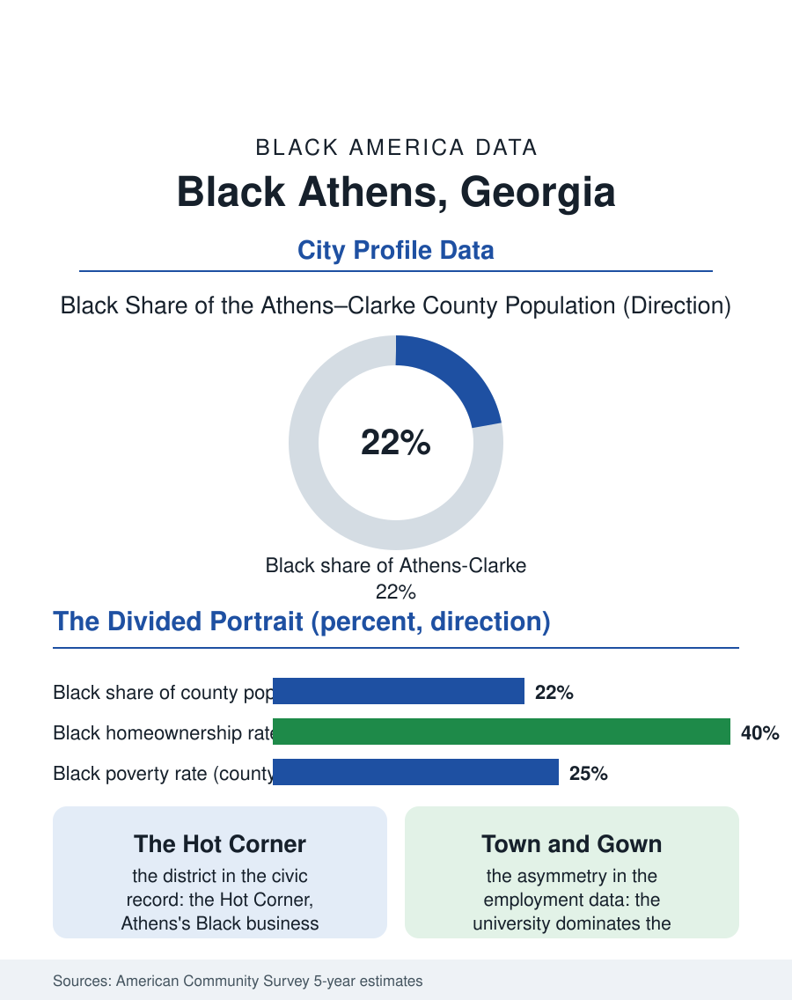

Black Cities
Older Than the University: Black Athens, Georgia
A Black community older than the university that dominates its city, from the Hot Corner's business district to the Morton Theatre's survival. The Athens file.

Athens, Georgia, is a college town with a Black community older than the university: roughly twenty-eight thousand Black residents in a county of about one hundred thirty thousand, around twenty-two percent, in a city where the University of Georgia's economy and the community's economy have run in parallel, unequal and intertwined, for two centuries. The census counts a population with deep rural roots in the Georgia piedmont and a modern profile stamped by the university's gravitational field. This article reads the Athens file.
Two Economies, One City
The community's formation predates the college's dominance: Black Athenians, enslaved and free, built much of the antebellum city, and the post-emancipation community consolidated in neighborhoods like East Athens and the Hot Corner downtown, the Black business district whose name survives in the city's memory and whose buildings anchored a commercial class serving the Black piedmont for a century. The university century layered over it: the University of Georgia, chartered in the eighteenth century, admitted its first Black students only in 1961, in an integration the federal courts ordered and the state's politics resisted in the full glare of national attention, and the desegregation generation, Hamilton Holmes and Charlayne Hunter chief among them, became the university's and the community's shared inheritance. The modern economies interlock asymmetrically: the university is the county's dominant employer, and Black Athenians staff it at every level except, in the faculty and administration data, its summit, a pattern the employment files record at flagship universities across the South; the town's service and music economies, Athens's famous independent music scene was substantially built in venues and by musicians the Hot Corner's tradition fed, run on the student calendar while the community's year is twelve months long.
The Numbers in Clarke County
The American Community Survey profile is the flaghip college town's divided portrait. The county's overall statistics glow with the university's human capital, while the Black community's numbers record the other Athens: poverty rates among Black residents running at multiples of the student-adjusted figures, median Black household income well below the county median, and homeownership trailing in a market the student and investor rental economy has repriced around the campus. The geography is the file's familiar southern form refined by the college: the historic Black neighborhoods nearest downtown face the gentrification pressure of a growing university and a celebrated downtown, while Black suburbanization moves outward along the county's corridors into the subdivisions. Educational attainment bifurcates with the economy, the university's workforce and the Black professional class it slowly diversifies on one side, the service workforce on the other, with Clarke County's public schools and Athens Technical College carrying the local pipeline between them, and the university's own pipeline programs in the county's schools among the most scrutinized town-gown instruments in the state's data. Health access benefits from the regional hospital systems while carrying the piedmont's chronic disease burdens in the pattern of the health files.
The Hot Corner's Heirs
The community's institutional spine is intact and unusually documented: the churches, several founded in the nineteenth century; the Morton Theatre, a surviving Black vaudeville house restored as a cultural center, an artifact almost no peer city can match; the Hot Corner's commemorative presence downtown; and a political representation that has integrated the consolidated city-county government in the modern era. The university relationship is the file's live negotiation, conducted in hiring data, admissions numbers, and the town-gown planning tables where the campus's growth meets the neighborhoods' ground. The forward indicators are the college town's own: continued university growth, the inland port and logistics investment in the region, and the Atlanta exosphere's slow approach down the highway, each repricing the community's land. Athens's Black population, a fifth to a quarter of the county on every recent count, has survived the university's exclusions, outlasted the Hot Corner's clearance pressures, and now negotiates with the institution that dominates its city from the position of the city's oldest continuous citizenry. The Athens file closes on that seniority. The university is the city's fame; the community is its memory, and the census, counting both in the same small county, records a Black population whose claim on the place predates the place's claim on the nation's attention by the length of the republic itself.
More in Black Cities
Black Atlanta: Population, Distribution, and Growth of a Black Metropolis
Metro Atlanta holds more than two million Black residents — roughly one in three, second only to New York. The suburban distribution, migration history, and composition of Black Atlanta in the census data.
Black New York: The Largest Black Population in America
The New York metropolitan area holds about 3.4 million Black residents — more than any metro in the nation — and the city itself about two million. The census profile.
Black Washington: The District and the Metro
The Washington metro holds about 1.6 million Black residents, and the District itself — long a majority-Black city — now records a Black share near 41 percent. The census profile.
Source: U.S. Census Bureau, American Community Survey 5-year estimates for Athens-Clarke County, GA; University of Georgia historical records.